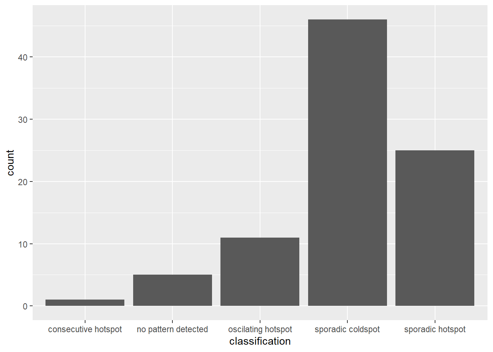

pacman::p_load(sf, sfdep, tmap, plotly, tidyverse, knitr)2: Spatial Weights, GLSA & EHSA
Getting Started
The code chunk below uses p_load() of pacman package to check if the required packages have been installed on the computer. If they are, the packages will be launched.
- sf package is used for importing, managing, and processing geospatial data.
- tmap package is used for thematic mapping.
- sfdep package is used to create spatial weights matrix and LISA objects using the
sfclass to represent spatial data. - plotly package is used to create interactive graphs.
Spatial Weights
The data sets used are:
- Hunan county boundary layer: a geospatial data set in ESRI shapefile format.
- Hunan_2012.csv: csv file that contains selected Hunan’s local development indicators in 2012.
Importing Data
Import shapefile into R
The code chunk below uses the st_read() function of sf package to import Hunan county boundary shapefile into R as a simple feature data frame called hunan.
hunan <- st_read(dsn = "data/geospatial",
layer = "Hunan")Reading layer `Hunan' from data source
`C:\magdalenecjw\ISSS624 Geospatial\In_Class_Exercise\Ex2\data\geospatial'
using driver `ESRI Shapefile'
Simple feature collection with 88 features and 7 fields
Geometry type: POLYGON
Dimension: XY
Bounding box: xmin: 108.7831 ymin: 24.6342 xmax: 114.2544 ymax: 30.12812
Geodetic CRS: WGS 84There are a total of 88 polygon features and 7 fields in hunan simple feature data frame. hunan is in wgs84 GCS.
Import aspatial data into R
The code chunk below uses the read_csv() function of readr package to import Hunan_2012.csv file into R and save it as a R dataframe called hunan2012.
hunan2012 <- read_csv("data/aspatial/Hunan_2012.csv")Performing relational join
left_join() of dplyr is used to join the geographical data and attribute table using County as the common identifier. Left join is done to ensure that the geospatial properties (geometry column) of the hunan sf data frame is retained. After the join, a pipe operation is done to further select only the required columns.
hunan <- left_join(hunan,hunan2012)%>%
select(1:4, 7, 15)Plot choropleth map
tmap_mode("plot")
tm_shape(hunan) +
tm_fill("GDPPC",
style = "quantile",
palette = "Blues",
title = "GDPPC") +
tm_borders(alpha = 0.5) +
tm_layout(main.title = "Distribution of GDP per capita by district, Hunan Province",
main.title.position = "center",
legend.height = 0.45,
legend.width = 0.35,
frame = TRUE) +
tm_scale_bar() +
tm_grid(alpha =0.2)Deriving Contiguity Spatial Weights
Identify contiguity neighbours: Queen method
The code chunk below computes contiguity based neighbours based on the Queen criterion using tidy method and sfdep package (instead of spdep package).
In both packages, the
queenargument takesTRUE(default) orFALSEas options. Thequeenargument is not specified in the code chunk below, hence, the default value ofTRUEwill be used.
nb_q <- hunan %>%
mutate(nb = st_contiguity(geometry), .before=1)The code chunk below is used to print the summary of the first lag neighbour list.
summary(nb_q$nb)Neighbour list object:
Number of regions: 88
Number of nonzero links: 448
Percentage nonzero weights: 5.785124
Average number of links: 5.090909
Link number distribution:
1 2 3 4 5 6 7 8 9 11
2 2 12 16 24 14 11 4 2 1
2 least connected regions:
30 65 with 1 link
1 most connected region:
85 with 11 linksThe summary report above shows that there are 88 area units in Hunan province. The most connected area unit has 11 neighbours. There are two are units with only one neighbour.
View the content of the data tables using the code chunk below.
Using sfdep instead of spdep gives an output that is a sf tibble data frame.
kable(head(nb_q, n=10))| nb | NAME_2 | ID_3 | NAME_3 | ENGTYPE_3 | County | GDPPC | geometry |
|---|---|---|---|---|---|---|---|
| 2, 3, 4, 57, 85 | Changde | 21098 | Anxiang | County | Anxiang | 23667 | POLYGON ((112.0625 29.75523… |
| 1, 57, 58, 78, 85 | Changde | 21100 | Hanshou | County | Hanshou | 20981 | POLYGON ((112.2288 29.11684… |
| 1, 4, 5, 85 | Changde | 21101 | Jinshi | County City | Jinshi | 34592 | POLYGON ((111.8927 29.6013,… |
| 1, 3, 5, 6 | Changde | 21102 | Li | County | Li | 24473 | POLYGON ((111.3731 29.94649… |
| 3, 4, 6, 85 | Changde | 21103 | Linli | County | Linli | 25554 | POLYGON ((111.6324 29.76288… |
| 4, 5, 69, 75, 85 | Changde | 21104 | Shimen | County | Shimen | 27137 | POLYGON ((110.8825 30.11675… |
| 67, 71, 74, 84 | Changsha | 21109 | Liuyang | County City | Liuyang | 63118 | POLYGON ((113.9905 28.5682,… |
| 9, 46, 47, 56, 78, 80, 86 | Changsha | 21110 | Ningxiang | County | Ningxiang | 62202 | POLYGON ((112.7181 28.38299… |
| 8, 66, 68, 78, 84, 86 | Changsha | 21111 | Wangcheng | County | Wangcheng | 70666 | POLYGON ((112.7914 28.52688… |
| 16, 17, 19, 20, 22, 70, 72, 73 | Chenzhou | 21112 | Anren | County | Anren | 12761 | POLYGON ((113.1757 26.82734… |
The table above shows that polygon 1 has five neighbours. They are polygons number 2, 3, 4, 57,and 85.
Identify contiguity neighbours: Rook method
The code chunk below computes contiguity based neighbours based on the Rook criterion using the sfdept package.
The
queenargument is now set toFALSEto compute based on the Rook criterion.
nb_r <- hunan %>%
mutate(nb = st_contiguity(geometry, queen = FALSE), .before=1)The code chunk below is used to print the summary of the first lag neighbour list.
summary(nb_q$nb)Neighbour list object:
Number of regions: 88
Number of nonzero links: 448
Percentage nonzero weights: 5.785124
Average number of links: 5.090909
Link number distribution:
1 2 3 4 5 6 7 8 9 11
2 2 12 16 24 14 11 4 2 1
2 least connected regions:
30 65 with 1 link
1 most connected region:
85 with 11 linksThe summary report above shows that there are 88 area units in Hunan province. The most connected area unit has 11 neighbours. There are two are units with only one neighbour.
View the content of the data tables using the code chunk below:
kable(head(nb_r, n=10))| nb | NAME_2 | ID_3 | NAME_3 | ENGTYPE_3 | County | GDPPC | geometry |
|---|---|---|---|---|---|---|---|
| 3, 4, 57, 85 | Changde | 21098 | Anxiang | County | Anxiang | 23667 | POLYGON ((112.0625 29.75523… |
| 57, 58, 78, 85 | Changde | 21100 | Hanshou | County | Hanshou | 20981 | POLYGON ((112.2288 29.11684… |
| 1, 4, 5, 85 | Changde | 21101 | Jinshi | County City | Jinshi | 34592 | POLYGON ((111.8927 29.6013,… |
| 1, 3, 5, 6 | Changde | 21102 | Li | County | Li | 24473 | POLYGON ((111.3731 29.94649… |
| 3, 4, 6, 85 | Changde | 21103 | Linli | County | Linli | 25554 | POLYGON ((111.6324 29.76288… |
| 4, 5, 69, 75, 85 | Changde | 21104 | Shimen | County | Shimen | 27137 | POLYGON ((110.8825 30.11675… |
| 67, 71, 74, 84 | Changsha | 21109 | Liuyang | County City | Liuyang | 63118 | POLYGON ((113.9905 28.5682,… |
| 9, 46, 47, 56, 78, 80, 86 | Changsha | 21110 | Ningxiang | County | Ningxiang | 62202 | POLYGON ((112.7181 28.38299… |
| 8, 66, 68, 78, 84, 86 | Changsha | 21111 | Wangcheng | County | Wangcheng | 70666 | POLYGON ((112.7914 28.52688… |
| 16, 19, 20, 22, 70, 72, 73 | Chenzhou | 21112 | Anren | County | Anren | 12761 | POLYGON ((113.1757 26.82734… |
The table above shows that polygon 1 has four neighbours. They are polygons number 3, 4, 57,and 85.
Identifying higher order neighbours
To identify higher order contiguity neighbours, use st_nb_lag_cumul() as shown in the code chunk below.
nb2_queen <- hunan %>%
mutate(nb = st_contiguity(geometry),
nb2 = st_nb_lag_cumul(nb, 2),
.before = 1)Note that if the order is 2, the result contains both 1st and 2nd order neighbors as shown on the print below.
nb2_queenSimple feature collection with 88 features and 8 fields
Geometry type: POLYGON
Dimension: XY
Bounding box: xmin: 108.7831 ymin: 24.6342 xmax: 114.2544 ymax: 30.12812
Geodetic CRS: WGS 84
First 10 features:
nb
1 2, 3, 4, 57, 85
2 1, 57, 58, 78, 85
3 1, 4, 5, 85
4 1, 3, 5, 6
5 3, 4, 6, 85
6 4, 5, 69, 75, 85
7 67, 71, 74, 84
8 9, 46, 47, 56, 78, 80, 86
9 8, 66, 68, 78, 84, 86
10 16, 17, 19, 20, 22, 70, 72, 73
nb2
1 2, 3, 4, 5, 6, 32, 56, 57, 58, 64, 69, 75, 76, 78, 85
2 1, 3, 4, 5, 6, 8, 9, 32, 56, 57, 58, 64, 68, 69, 75, 76, 78, 85
3 1, 2, 4, 5, 6, 32, 56, 57, 69, 75, 78, 85
4 1, 2, 3, 5, 6, 57, 69, 75, 85
5 1, 2, 3, 4, 6, 32, 56, 57, 69, 75, 78, 85
6 1, 2, 3, 4, 5, 32, 53, 55, 56, 57, 69, 75, 78, 85
7 9, 19, 66, 67, 71, 73, 74, 76, 84, 86
8 2, 9, 19, 21, 31, 32, 34, 35, 36, 41, 45, 46, 47, 56, 58, 66, 68, 74, 78, 80, 84, 85, 86
9 2, 7, 8, 19, 21, 35, 46, 47, 56, 58, 66, 67, 68, 74, 76, 78, 80, 84, 85, 86
10 11, 14, 15, 16, 17, 18, 19, 20, 21, 22, 23, 70, 71, 72, 73, 74, 82, 83, 86
NAME_2 ID_3 NAME_3 ENGTYPE_3 County GDPPC
1 Changde 21098 Anxiang County Anxiang 23667
2 Changde 21100 Hanshou County Hanshou 20981
3 Changde 21101 Jinshi County City Jinshi 34592
4 Changde 21102 Li County Li 24473
5 Changde 21103 Linli County Linli 25554
6 Changde 21104 Shimen County Shimen 27137
7 Changsha 21109 Liuyang County City Liuyang 63118
8 Changsha 21110 Ningxiang County Ningxiang 62202
9 Changsha 21111 Wangcheng County Wangcheng 70666
10 Chenzhou 21112 Anren County Anren 12761
geometry
1 POLYGON ((112.0625 29.75523...
2 POLYGON ((112.2288 29.11684...
3 POLYGON ((111.8927 29.6013,...
4 POLYGON ((111.3731 29.94649...
5 POLYGON ((111.6324 29.76288...
6 POLYGON ((110.8825 30.11675...
7 POLYGON ((113.9905 28.5682,...
8 POLYGON ((112.7181 28.38299...
9 POLYGON ((112.7914 28.52688...
10 POLYGON ((113.1757 26.82734...Compute contiguity weights: Queen method
Compute the contiguity weights by using st_weights() of sfdep package. In the code chunk below, Queen method is used to derive the contiguity weights.
In the spdep package, the weights matrix can be retrieved together with the neighbour list from the
poly2nb()argument.
wm_q <- hunan %>%
mutate(nb = st_contiguity(geometry),
wt = st_weights(nb, style = "W"),
.before = 1) st_weights() takes in three arguments:
nb: A neighbor list object as created byst_neighbors().style: Default“W”for row standardized weights. This value can also be“B”(basic binary coding),“C”(globally standardised, or sums over all links to n),“U”(C divided by the number of neighbours, or sums over all links to unity),“minmax”, and“S”(the variance-stabilizing coding scheme proposed by Tiefelsdorf et al. 1999, p. 167-168, or sums over all links to n).allow_zero: IfTRUE, assigns zero as lagged value to zone without neighbors.
wm_qSimple feature collection with 88 features and 8 fields
Geometry type: POLYGON
Dimension: XY
Bounding box: xmin: 108.7831 ymin: 24.6342 xmax: 114.2544 ymax: 30.12812
Geodetic CRS: WGS 84
First 10 features:
nb
1 2, 3, 4, 57, 85
2 1, 57, 58, 78, 85
3 1, 4, 5, 85
4 1, 3, 5, 6
5 3, 4, 6, 85
6 4, 5, 69, 75, 85
7 67, 71, 74, 84
8 9, 46, 47, 56, 78, 80, 86
9 8, 66, 68, 78, 84, 86
10 16, 17, 19, 20, 22, 70, 72, 73
wt
1 0.2, 0.2, 0.2, 0.2, 0.2
2 0.2, 0.2, 0.2, 0.2, 0.2
3 0.25, 0.25, 0.25, 0.25
4 0.25, 0.25, 0.25, 0.25
5 0.25, 0.25, 0.25, 0.25
6 0.2, 0.2, 0.2, 0.2, 0.2
7 0.25, 0.25, 0.25, 0.25
8 0.1428571, 0.1428571, 0.1428571, 0.1428571, 0.1428571, 0.1428571, 0.1428571
9 0.1666667, 0.1666667, 0.1666667, 0.1666667, 0.1666667, 0.1666667
10 0.125, 0.125, 0.125, 0.125, 0.125, 0.125, 0.125, 0.125
NAME_2 ID_3 NAME_3 ENGTYPE_3 County GDPPC
1 Changde 21098 Anxiang County Anxiang 23667
2 Changde 21100 Hanshou County Hanshou 20981
3 Changde 21101 Jinshi County City Jinshi 34592
4 Changde 21102 Li County Li 24473
5 Changde 21103 Linli County Linli 25554
6 Changde 21104 Shimen County Shimen 27137
7 Changsha 21109 Liuyang County City Liuyang 63118
8 Changsha 21110 Ningxiang County Ningxiang 62202
9 Changsha 21111 Wangcheng County Wangcheng 70666
10 Chenzhou 21112 Anren County Anren 12761
geometry
1 POLYGON ((112.0625 29.75523...
2 POLYGON ((112.2288 29.11684...
3 POLYGON ((111.8927 29.6013,...
4 POLYGON ((111.3731 29.94649...
5 POLYGON ((111.6324 29.76288...
6 POLYGON ((110.8825 30.11675...
7 POLYGON ((113.9905 28.5682,...
8 POLYGON ((112.7181 28.38299...
9 POLYGON ((112.7914 28.52688...
10 POLYGON ((113.1757 26.82734...Distance-based weights
There are three popularly used distance-based spatial weights, they are:
- fixed distance weights,
- adaptive distance weights, and
- inverse distance weights (IDW).
Deriving fixed distance weights
Before deriving the fixed distance weights, determine the upper limit for distance band by using the steps below.
geo <- sf::st_geometry(hunan)
nb <- st_knn(geo, longlat = TRUE)
dists <- unlist(st_nb_dists(geo, nb))
st_nb_dists()of sfdep is used to calculate the nearest neighbour distance. The output is a list of distances for each observation’s neighbors list.unlist()of Base R is then used to return the output as a vector so that the summary statistics of the nearest neighbour distances can be derived.
Next, derive summary statistics of the nearest neighbour distances vector (i.e. dists) by using the code chunk below.
summary(dists) Min. 1st Qu. Median Mean 3rd Qu. Max.
21.56 29.11 36.89 37.34 43.21 65.80 The summary statistics report above shows that the maximum nearest neighbour distance is 65.80km. By using a threshold value of 66km will ensure that each area will have at least one neighbour.
Next, compute the fixed distance weights by using the code chunk below.
wm_fd <- hunan %>%
mutate(nb = st_dist_band(geometry, upper = 66),
wt = st_weights(nb),
.before = 1)
st_dists_band()of sfdep is used to identify neighbors based on a distance band (i.e. 66km). The output is a list of neighbours (i.e. nb).st_weights()is then used to calculate polygon spatial weights of the nb list. Note that: (1) the default style argument is set to“W”for row standardized weights, and the defaultallow_zerois set toTRUE, which assigns zero as lagged value to zone without neighbors.
kable(head(wm_fd, n=10))| nb | wt | NAME_2 | ID_3 | NAME_3 | ENGTYPE_3 | County | GDPPC | geometry |
|---|---|---|---|---|---|---|---|---|
| 2, 3, 4, 5, 57, 64 | 0.1666667, 0.1666667, 0.1666667, 0.1666667, 0.1666667, 0.1666667 | Changde | 21098 | Anxiang | County | Anxiang | 23667 | POLYGON ((112.0625 29.75523… |
| 1, 57, 58, 78, 85 | 0.2, 0.2, 0.2, 0.2, 0.2 | Changde | 21100 | Hanshou | County | Hanshou | 20981 | POLYGON ((112.2288 29.11684… |
| 1, 4, 5, 57 | 0.25, 0.25, 0.25, 0.25 | Changde | 21101 | Jinshi | County City | Jinshi | 34592 | POLYGON ((111.8927 29.6013,… |
| 1, 3, 5, 6 | 0.25, 0.25, 0.25, 0.25 | Changde | 21102 | Li | County | Li | 24473 | POLYGON ((111.3731 29.94649… |
| 1, 3, 4, 6, 69 | 0.2, 0.2, 0.2, 0.2, 0.2 | Changde | 21103 | Linli | County | Linli | 25554 | POLYGON ((111.6324 29.76288… |
| 4, 5, 69 | 0.3333333, 0.3333333, 0.3333333 | Changde | 21104 | Shimen | County | Shimen | 27137 | POLYGON ((110.8825 30.11675… |
| 67, 71, 84 | 0.3333333, 0.3333333, 0.3333333 | Changsha | 21109 | Liuyang | County City | Liuyang | 63118 | POLYGON ((113.9905 28.5682,… |
| 9, 46, 47, 78, 80 | 0.2, 0.2, 0.2, 0.2, 0.2 | Changsha | 21110 | Ningxiang | County | Ningxiang | 62202 | POLYGON ((112.7181 28.38299… |
| 8, 46, 66, 68, 84, 86 | 0.1666667, 0.1666667, 0.1666667, 0.1666667, 0.1666667, 0.1666667 | Changsha | 21111 | Wangcheng | County | Wangcheng | 70666 | POLYGON ((112.7914 28.52688… |
| 16, 20, 22, 70, 72, 73 | 0.1666667, 0.1666667, 0.1666667, 0.1666667, 0.1666667, 0.1666667 | Chenzhou | 21112 | Anren | County | Anren | 12761 | POLYGON ((113.1757 26.82734… |
Deriving adaptive distance weights
wm_ad <- hunan %>%
mutate(nb = st_knn(geometry,
k=8),
wt = st_weights(nb),
.before = 1)
st_knn()of sfdep is used to identify neighbors based on k (i.e.k = 8indicates the nearest eight neighbours). The output is a list of neighbours (i.e.nb).st_weights()is then used to calculate polygon spatial weights of the nb list. Note that: (1) the default style argument is set to“W”for row standardized weights, and the defaultallow_zerois set toTRUE, which assigns zero as lagged value to zone without neighbors.
Deriving inverse distance weights
wm_idw <- hunan %>%
mutate(nb = st_contiguity(geometry),
wts = st_inverse_distance(nb, geometry, scale = 1, alpha = 1),
.before = 1)
st_contiguity()of sfdep is used to identify the neighbours by using contiguity criteria. The output is a list of neighbours (i.e.nb).st_inverse_distance()is then used to calculate inverse distance weights of neighbours on thenblist.
Learnings from the above exercise
sfdep package can be used to perform the same spatial weights computations as spdep package, but with additional functionalities and has a sf and tidyverse friendly interface to the package. There is also a mapping of the functions in sfdep against that of spdep in the documentation.
Global & Local Measures of Spatial Autocorrelation (GLSA)
Computing Global Moran’s I
In the code chunk below, global_moran() function is used to compute the Moran’s I value. Different from spdep package, the output is a tibble data.frame.
moranI <- global_moran(wm_q$GDPPC,
wm_q$nb,
wm_q$wt)
glimpse(moranI)List of 2
$ I: num 0.301
$ K: num 7.64In general, Moran’s I test will be performed instead of just computing the Moran’s I statistics. With sfdep package, Moran’s I test can be performed by using global_moran_test()as shown in the code chunk below.
global_moran_test(wm_q$GDPPC,
wm_q$nb,
wm_q$wt)
Moran I test under randomisation
data: x
weights: listw
Moran I statistic standard deviate = 4.7351, p-value = 1.095e-06
alternative hypothesis: greater
sample estimates:
Moran I statistic Expectation Variance
0.300749970 -0.011494253 0.004348351 The default for
alternativeargument is“two.sided”. Other supported arguments are“greater”or“less”. The default forrandomizationargument isTRUE. IfFALSE, there is an assumption of normality.
Performing Global Moran’s I Permutation test
In practice, monte carlo simulation should be used to perform the statistical test. For sfdep, it is supported by globel_moran_perm(). It is always a good practice to use set.seed() before performing simulation to ensure that the computation is reproducible.
The numbers of simulation is alway equal to
nsim+ 1. This mean that ifnsim = 99, 100 simulations will be performed.
set.seed(1234)
global_moran_perm(wm_q$GDPPC, wm_q$nb, wm_q$wt, nsim = 99)
Monte-Carlo simulation of Moran I
data: x
weights: listw
number of simulations + 1: 100
statistic = 0.30075, observed rank = 100, p-value < 2.2e-16
alternative hypothesis: two.sidedThe report above show that the p-value is smaller than alpha value of 0.05. Hence, reject the null hypothesis that the spatial patterns spatial independent. Because the Moran’s I statistics is greater than 0, it can be inferred that the spatial distribution shows sign of clustering.
Computing Local Moran’s I
Compute local Moran’s I of GDPPC at county level by using local_moran() of sfdep package.
unnest()of tidyr package is used to expand a list-column containing data frames into rows and columns.
lisa <- wm_q %>%
mutate(local_moran = local_moran(GDPPC, nb, wt, nsim = 99),
.before = 1) %>%
unnest(local_moran)Visualising Local Moran’s I and p-values of Local Moran’s I
In this code chunk below, tmap functions are used prepare a choropleth map using values in the ii and p_ii fields.
For p-values, the appropriate classification should be 0.001, 0.01, 0.05 and not significant instead of using default classification scheme.
tmap_mode("plot")
map1 <- tm_shape(lisa) +
tm_fill("ii", palette = "Blues") +
tm_borders(alpha = 0.5) +
tm_view(set.zoom.limits = c(6,8)) +
tm_layout(main.title = "local Moran's I of GDPPC",
main.title.size = 0.8)
map2 <- tm_shape(lisa) +
tm_fill("p_ii", palette = "-Greys",
breaks = c(0, 0.001, 0.01, 0.05, 1),
labels = c("0.001", "0.01", "0.05", "Not sig")) +
tm_borders(alpha = 0.5) +
tm_layout(main.title = "p-value of local Moran's I",
main.title.size = 0.8)
tmap_arrange(map1, map2, ncol = 2)
Visualising LISA map
LISA map is a categorical map showing outliers and clusters. There are two types of outliers namely: High-Low and Low-High outliers. Likewise, there are two type of clusters namely: High-High and Low-Low clusters.
LISA map is an interpreted map by combining local Moran’s I of geographical areas and their respective p-values.
In lisa sf data.frame, there are three fields containing the LISA categories. They are mean, median and pysal. In general, classification in mean will be used as shown in the code chunk below.
If the distribution is skewed, it is not advisable to use mean.
lisa_sig <- lisa %>%
filter(p_ii < 0.05)
tmap_mode("plot")
tm_shape(lisa) +
tm_polygons() +
tm_borders(alpha = 0.5) +
tm_shape(lisa_sig) +
tm_fill("mean") +
tm_borders(alpha = 0.4)
Emerging Hot Spot Analysis (EHSA)
The data sets used are:
- Hunan county boundary layer: a geospatial data set in ESRI shapefile format (already loaded).
- Hunan_GDPPC.csv: csv file that contains Hunan’s local GDPPC from 2005 to 2021.
Importing Data
Import aspatial data into R
The code chunk below uses the read_csv() function of readr package to import Hunan_GDPPC.csv file into R and save it as a R dataframe called hunan_gdppc.
GDPPC <- read_csv("data/aspatial/Hunan_GDPPC.csv")Create a Time Series Cube
The code chunk below creates a time-space cube (spacetime cube) using spacetime() of sfdep.
GDPPC_st <- spacetime(GDPPC, hunan, .loc_col = "County", .time_col = "Year")The code chunk below checks that the time series cube has been created correctly.
is_spacetime_cube(GDPPC_st)[1] TRUEThe TRUE return confirms that GDPPC_st object is indeed a time-space cube.
Derive spatial weights
The code chunk below will be used to identify neighbours and to derive an inverse distance weights.
GDPPC_nb <- GDPPC_st %>%
activate("geometry") %>%
mutate(nb = include_self(st_contiguity(geometry)),
wt = st_inverse_distance(nb, geometry, scale = 1, alpha = 1),
.before = 1) %>%
set_nbs("nb") %>%
set_wts("wt")
head(GDPPC_nb)# A tibble: 6 × 5
Year County GDPPC nb wt
<dbl> <chr> <dbl> <list> <list>
1 2005 Anxiang 8184 <int [6]> <dbl [6]>
2 2005 Hanshou 6560 <int [6]> <dbl [6]>
3 2005 Jinshi 9956 <int [5]> <dbl [5]>
4 2005 Li 8394 <int [5]> <dbl [5]>
5 2005 Linli 8850 <int [5]> <dbl [5]>
6 2005 Shimen 9244 <int [6]> <dbl [6]>
activate()of dplyr package is used to activate the geometry context.mutate()of dplyr package is used to create two new columnsnbandwt. Then activate the data context again and copy over thenbandwtcolumns to each time-slice usingset_nbs()andset_wts(). Row order is very important so do not rearrange the observations after usingset_nbs()orset_wts().
The dataset now has neighbors and weights for each time-slice.
head(GDPPC_nb)# A tibble: 6 × 5
Year County GDPPC nb wt
<dbl> <chr> <dbl> <list> <list>
1 2005 Anxiang 8184 <int [6]> <dbl [6]>
2 2005 Hanshou 6560 <int [6]> <dbl [6]>
3 2005 Jinshi 9956 <int [5]> <dbl [5]>
4 2005 Li 8394 <int [5]> <dbl [5]>
5 2005 Linli 8850 <int [5]> <dbl [5]>
6 2005 Shimen 9244 <int [6]> <dbl [6]>Computing Gi*
The new columns are then used to manually compute the local Gi* for each location by grouping Year and using local_gstar_perm() of sfdep package. After which, use unnest() to unnest gi_star column of the newly created gi_stars data frame.
gi_stars <- GDPPC_nb %>%
group_by(Year) %>%
mutate(gi_star = local_gstar_perm(GDPPC, nb, wt)) %>%
tidyr::unnest(gi_star)Perform Emerging Hotspot Analysis
Perform EHSA analysis by using emerging_hotspot_analysis() of sfdep package. It takes a spacetime object (i.e. GDPPC_st), and the quoted name of the variable of interest (i.e. GDPPC) for .var argument. The k argument is used to specify the number of time lags which is set to 1 by default. Lastly, nsim defines the number of simulations to be performed.
ehsa <- emerging_hotspot_analysis(x = GDPPC_st,
.var = "GDPPC",
k = 1,
nsim = 99)Visualising the distribution of EHSA classes
In the code chunk below, ggplot2 functions are used to reveal the distribution of EHSA classes as a bar chart.
ggplot(data = ehsa,
aes(x = classification)) +
geom_bar()
Figure above shows that the “sporadic cold spots” class has the highest count of counties.
Visualising EHSA
Before visualising the geographic distribution EHSA classes, the data frames hunan and ehsa must be joined together by using the code chunk below.
hunan_ehsa <- hunan %>%
left_join(ehsa, by = c("County" = "location"))Next, tmap functions will be used to plot a categorical choropleth map by using the code chunk below.
ehsa_sig <- hunan_ehsa %>%
filter(p_value < 0.05)
tmap_mode("plot")
tm_shape(hunan_ehsa) +
tm_polygons() +
tm_borders(alpha = 0.5) +
tm_shape(ehsa_sig) +
tm_fill("classification") +
tm_borders(alpha = 0.4)